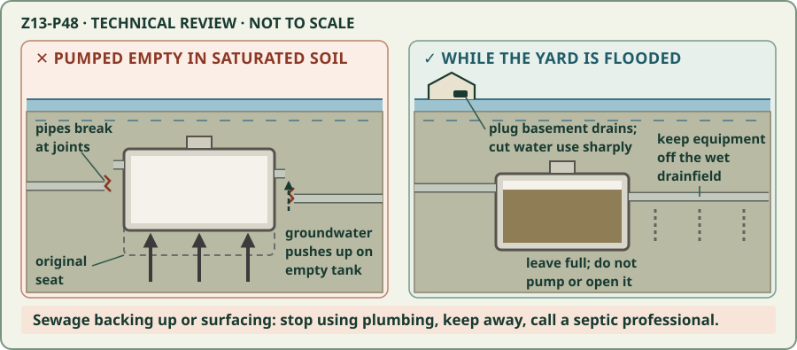

Z13-P48 · Home survival and utilities · New manuscript
Avoid premature tank pumping and drainfield damage after septic flooding
Prevent costly structural tank float-out and groundwater contamination when heavy rain or river floods saturate a septic yard.
When it applies · Homes with septic tanks and soil drainfields during spring snowmelt floods or heavy storm inundation.
Equipment · Water-conservation plan, emergency bucket toilet backup if drains back up, and licensed septic inspector contact.

Actions
- Stop or severely reduce indoor water use while floodwaters stand over the septic drainfield—saturated soil cannot absorb effluent, forcing wastewater back into home plumbing or onto the yard.[U07]
- NEVER pump out a septic tank while surrounding ground is still flooded or waterlogged—an emptied underground tank acts like a hollow boat and can buoyantly pop straight up out of wet earth, snapping inlet/outlet pipes permanently.[U07]
- Wait until floodwaters recede and ground dries before having a licensed septic professional inspect electrical pumps, remove flood silt/debris from the tank, and clear the system for normal use.[U07]
Failure recognition · Calling a vacuum truck to pump a septic tank empty while the yard is still saturated with spring floodwater, floating the concrete tank two feet upward.[U07]
Verify · Confirm zero traffic over wet drainfields, minimal indoor water draining during floods, and licensed inspection after ground dries.[U07]
Stop or change course · Sewage surfacing in the yard or backing into basement tubs requires halting plumbing use, isolating contaminated areas, and using temporary containment or relocating.[U07, U13]
Evidence and editorial notes
- U07 · U.S. EPA · Septic Systems: What to Do after the Flood (Current web edition)
- Section: Do I pump my tank during flooded or saturated drainfield conditions?; After the flood · Conditions: Flooded or saturated septic drainfield
Support: Conserve water and do not pump while the field is flooded or saturated. Arrange professional inspection and qualified servicing as conditions permit.
Limitations: Avoid use until local or professional directions allow. Tank buoyancy and recovery depend on site and system. · Conflicting evidence: See A02 claim audit for boundaries.
Editorial note: Grounds septic-system limits and outage water conservation in Z13. · Specialist reviewer: Onsite wastewater engineering and public health
Primary source · checked 2026-11-25 - U13 · CDC · How to Make Water Safe in an Emergency (2024-09-19)
- Section: Sanitation, Hand Hygiene, and Emergency Waste Containment · Conditions: Household water-service or sewer interruption
Support: Maintain separate handwashing stations using safe water and soap (or alcohol hand rub when hands are not visibly soiled), line emergency bucket toilets with heavy bags and tight lids when sewer service is unusable, and never mix bleach with ammonia or acids.
Limitations: Improvised sanitation is a temporary containment bridge until municipal sewer or licensed sanitation resumes; follow local health department disposal orders. · Conflicting evidence: None; prevents fecal-oral outbreaks and toxic chloramine gas mixing.
Editorial note: Core household sanitation and chemical-mixing boundary in Z13. · Specialist reviewer: Environmental health and sanitation specialist
Primary source · checked 2026-11-24
Source lineage · US EPA Septic Systems; new manuscript · Classification · New manuscript.